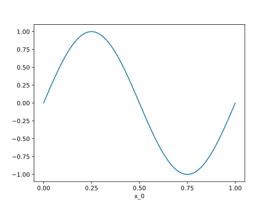

About Nutils
Nutils is a Free and Open Source Python programming library for Finite Element Method computations, developed by Evalf and distributed under the permissive MIT license. Key features are a readable, math centric syntax, an object oriented design, strict separation of topology and geometry, and high level function manipulations with support for automatic differentiation.
Nutils provides the tools required to construct a typical simulation workflow in just a few lines of Python code, while at the same time leaving full flexibility to build novel workflows or interact with third party tools. With native support for Isogeometric Analysis (IGA), the Finite Cell method (FCM), multi-physics, mixed methods, and hierarchical refinement, Nutils is at the forefront of numerical discretization science. Efficient under-the-hood vectorization and built-in parallellisation provide for an effortless transition from academic research projects to full scale, real world applications.
Nutils is actively used in a wide range of research, studying both novel physics as well as numerical techniques. If you are using Nutils in your research, please consider citing Nutils in your publications.
How to Read This Book
Since Nutils is a library for the development of numerical simulations, this book assumes that the reader is familiar with differential calculus, Galerkin methods, and the Finite Element Method. If this is not the case, chances are that Nutils is not the tool they are looking for.
First time users who are eager to get their feet wet will want to begin with the getting started guide and build a functioning Poisson solver in three easy steps, no questions asked. Following this, beginners are strongly advised to follow the hands on tutorial to gain an an in-depth understanding of Nutils' concepts and get familiar with the syntax.
Novices and advanced users alike may find interest in the installation guide, which ranges from basic installation instructions to tips and tricks for optimizing the installation, instructions for running a Docker style container, and suggestions for computing remotely.
Anybody looking to build their own Nutils simulations are encouraged to browse through projects in the examples section. Most simulations will have components in common with existing scripts, so a mix-and-match approach is a good way to start building your own. In case questions do remain, the support page lists ways of getting in touch with developers.
Finally, an exhaustive overview of all Nutils objects and functions can be found in the API Reference.
Getting Started
The following is a quick start guide to running your first Nutils simulation in three simple steps. Afterward, be sure to read the installation guide for extra installation instructions, study the tutorial to familiarize yourself with Nutils' concepts and syntax, and explore the examples for inspiration.
Step 1: Install Nutils and Matplotlib
With Python version 3.7 or newer installed, Nutils and Matplotlib can be installed via the Python Package Index using the pip package installer. In a terminal window:
python -m pip install --user nutils matplotlib
Note that Nutils depends on Numpy, Treelog and Stringly, which means that these modules are pulled in automatically if they were not installed prior. Though most Nutils applications will require Matplotlib for visualization, it is not a dependency for Nutils itself, and is therefore installed explicitly.
Step 2: Create a simulation script
Open a text editor and create a file poisson.py with the following contents:
from nutils import mesh, function, solver, export, cli
def main(nelems: int = 10, etype: str = 'square'):
domain, x = mesh.unitsquare(nelems, etype)
u = function.dotarg('udofs', domain.basis('std', degree=1))
g = u.grad(x)
J = function.J(x)
cons = solver.optimize('udofs',
domain.boundary.integral(u**2 * J, degree=2), droptol=1e-12)
udofs = solver.optimize('udofs',
domain.integral((g @ g / 2 - u) * J, degree=1), constrain=cons)
bezier = domain.sample('bezier', 3)
x, u = bezier.eval([x, u], udofs=udofs)
export.triplot('u.png', x, u, tri=bezier.tri, hull=bezier.hull)
cli.run(main)
Note that while we could make the script even shorter by avoiding the main
function and cli.run, the above structure is preferred as it automatically
sets up a logging environment, activates a matrix backend and handles command
line parsing.
Step 3: Run the simulation
Back in the terminal, the simulation can now be started by running:
python poisson.py
This should produce the following output:
nutils v7.0
optimize > constrained 40/121 dofs
optimize > optimum value 0.00e+00
optimize > solve > solving 81 dof system to machine precision using arnoldi solver
optimize > solve > solver returned with residual 6e-17
optimize > optimum value -1.75e-02
u.png
log written to file:///home/myusername/public_html/poisson.py/log.html
If the terminal is reasonably modern (Windows users may want to install the new Windows Terminal) then the messages are coloured for extra clarity. The last line of the log shows the location of the simultaneously generated html file that holds the same log, as well as a link to the generated image.
To run the same simulation on a mesh that is finer and made up or triangles instead of squares, arguments can be provided on the command line:
python poisson.py nelems=20 etype=triangle
Installation
Nutils requires a working installation of Python 3.5 or higher. Many different installers exist and there are no known issues with any of them. When in doubt about which to use, a safe option is to go with the official installer. From there on Nutils can be installed following the steps below.
Depending on your system the Python executable may be installed as either
python or python3, or both, not to mention alternative implementations such
as pypy or pyston. In the following instructions, python is to be
replaced with the relevant executable name.
Installing Nutils
Nutils is installed via Python's Pip package
installer, which most Python distributions install by default. In the following
instructions we add the flag --user for a local installation that does not
require system privileges, which is recommended but not required.
The following command installs the stable version of Nutils from the package archive, along with its dependencies Numpy, Treelog and Stringly:
python -m pip install --user nutils
To install the most recent development version we use Github's ability to generate zip balls:
python -m pip install --user --force-reinstall \
https://github.com/evalf/nutils/archive/refs/heads/master.zip
Alternatively, if the Git version control system is installed, we can use pip's ability to interact with it directly to install the same version as follows:
python -m pip install --user --force-reinstall \
git+https://github.com/evalf/nutils.git@master
This notation has the advantage that even a specific commit (rather than a
branch) can be installed directly by specifying it after the @.
Finally, if we do desire a checkout of Nutils' source code, for instance to make changes to it, then we can instruct pip to install directly from the location on disk::
git clone https://github.com/evalf/nutils.git
cd nutils
python -m pip install --user .
In this scenario it is possible to add the --editable flag to install Nutils
by reference, rather than by making a copy, which is useful in situations of
active development. Note, however, that pip requires manual intervention to
revert back to a subsequent installation by copy.
Installing a matrix backend
Nutils currently supports three matrix backends: Numpy, Scipy and MKL. Since Numpy is a primary dependency this backend is always available. Unfortunately it is also the least performant of the three because of its inability to exploit sparsity. It is therefore strongly recommended to install one of the other two backends via the instructions below.
By default, Nutils automatically activates the best available matrix backend:
MKL, Scipy or Numpy, in that order. A consequence of this is that a faulty
installation may easily go unnoticed as Nutils will silently fall back on a
lesser backend. As such, to make sure that the installation was successful it
is recommended to force the backend at least once by setting the
NUTILS_MATRIX environment variable. In Linux:
NUTILS_MATRIX=MKL python myscript.py
Scipy
The Scipy matrix backend becomes available when Scipy is installed, either using the platform's package manager or via pip:
python -m pip install --user scipy
In addition to a sparse direct solver, the Scipy backend provides many
iterative solvers such as CG, CGS and GMRES, as well as preconditioners. The
direct solver can optionally be made more performant by additionally installing
the scikit-umfpack module.
MKL
Intel's oneAPI Math Kernel Library provides the Pardiso sparse direct solver, which is easily the most powerful direct solver that is currently supported. It is installed via the official instructions, or, if applicable, by any of the steps below.
On a Debian based Linux system (such as Ubuntu) the libraries can be directly installed via the package manager:
sudo apt install libmkl-rt
For Fedora or Centos Linux, Intel maintains its own repository that can be added with the following steps:
sudo dnf config-manager --add-repo https://yum.repos.intel.com/mkl/setup/intel-mkl.repo
sudo rpm --import https://yum.repos.intel.com/intel-gpg-keys/GPG-PUB-KEY-INTEL-SW-PRODUCTS-2019.PUB
sudo dnf install intel-mkl
sudo tee /etc/ld.so.conf.d/mkl.conf << EOF > /dev/null
/opt/intel/lib/intel64/
/opt/intel/mkl/lib/intel64/
EOF
sudo ldconfig -v
Quality of Life
Here we list some modules that are not direct requirements, but that can be used in conjunction with Nutils to make life a little bit better.
BottomBar
BottomBar is a context manager for Python
that prints a status line at the bottom of a terminal window. When it is
installed, cli.run automatically activates it to display the location of the
html log (rather than only logging it at the beginning and end of the
simulation) as well as runtime and memory usage information.
python -m pip install bottombar
Improving performance
While Nutils is not (yet) the fastest tool in its class, with some effort it is possible to achieve sufficient performance to allow simulations of over a million degrees of freedom. The matrix backend is the most important thing to get right, but there are a few other factors that are worth considering.
Enable parallel processing
On multi-core architectures, the most straightforward acceleration path
available is to use parallel assembly, activated using the NUTILS_NPROCS
environment variable. Both Linux and OS X both are supported. Unfortunately,
the feature is currently disabled on Windows as it does not support the fork
system call that is used by the current implementation.
On Windows, the easiest way to enjoy parallel speedup is to make use of the new Windows Subsystem for Linux (WSL2), which is complete Linux environment running on top of Windows. To install it simply select one of the many Linux distributions from the Windows store, such as Ubuntu 20.04 LTS or Debian GNU/Linux.
Disable threads
Many Numpy installations default to using the openBLAS library to provide its
linear algebra routines, which supports multi-threading using the openMP
parallelization standard. While this is useful in general, it is in fact
detrimental in case Nutils is using parallel assembly, in which case the
numerical operations are best performed sequentially. This can be achieved by
setting the OMP_NUM_THREADS environment variable.
In Linux this can be done permanently by adding the following line to the
shell's configuration file. In Linux this is typically ~/.bashrc:
export OMP_NUM_THREADS=1
The downside to this approach is that multithreading is disabled for all applications that use openBLAS, not just Nutils. Alternatively in Linux the setting can be specified one-off in the form of a prefix::
OMP_NUM_THREADS=1 NUTILS_NPROCS=8 python myscript.py
Consider a faster interpreter
The most commonly used Python interpreter is without doubt the CPython reference implementation, but it is not the only option. Before taking an application in production it may be worth testing if other implementations have useful performance benefits.
One interpreter of note is Pyston, which brings
just-in-time compilation enhancements that in a typical application can yield a
20% speed improvement. After Pyston is installed, Nutils and dependencies can
be installed as before simply replacing python by pyston3. As packages will
be installed from source some development libraries may need to be installed,
but what is missing can usually be inferred from the error messages.
Using Containers
As an alternative to installing Nutils, it is possible to download a preinstalled system image with all the above considerations taken care of. Nutils provides OCI compatible containers for all releases, as well as the current developement version, which can be run using tools such as Docker or Podman. The images are hosted in Github's container repository.
The container images include all the :ref:examples. To run one, add the name
of the example and any additional arguments to the command line. For example,
you can run example laplace using the latest version of Nutils with:
docker run --rm -it ghcr.io/evalf/nutils:latest laplace
HTML log files are generated in the /log directory of the container. If you
want to store the log files in /path/to/log on the host, add -v /path/to/log:/log to the command line before the name of the image. Extending
the previous example:
docker run --rm -it -v /path/to/log:/log ghcr.io/evalf/nutils:latest laplace
To run a Python script in this container, bind mount the directory containing
the script, including all files necessary to run the script, to /app in the
container and add the relative path to the script and any arguments to the
command line. For example, you can run /path/to/myscript.py with Docker
using:
docker run --rm -it -v /path/to:/app:ro ghcr.io/evalf/nutils:latest myscript.py
Remote Computing
Computations beyond a certain size are usually moved to a remote computing facility, typically accessed using tools such as Secure Shell or Mosh, combined with a terminal multiplexer such as GNU Screen or Tmux. In this scenario it is useful to install a webserver for remote viewing of the html logs.
The standard ~/public_html output directory is configured with the scenario
in mind, as the Apache webserver uses this as the
default user
directory. As this
is disabled by default, the module needs to be enabled by editing the relevant
configuration file or, in Debian Linux, by using the a2enmod utility::
sudo a2enmod userdir
Similar behaviour can be achieved with the Nginx by configuring a location pattern in the appropriate server block:
location ~ ^/~(.+?)(/.*)?$ {
alias /home/$1/public_html$2;
}
Finally, the terminal output can be made to show the http address rather than
the local uri by adding the following line to the ~/.nutilsrc configuration
file:
outrooturi = 'https://mydomain.tld/~myusername/'
Tutorial
In this tutorial we will explore Nutils' main building blocks by solving a simple 1D Laplace problem. The tutorial assumes knowledge of the Python programming language, as well as familiarity with the third party modules Numpy and Matplotlib. It also assumes knowledge of advanced calculus, weak formulations, and the Finite Element Method, and makes heavy use of Einstein notation.
Whetting your Appetite
The computation that we will work towards amounts to about 20 lines of Nutils code, including visualization. The entire script is presented below, in copy-pasteable form suitable for interactive exploration using for example ipython. In the sections that follow we will go over these lines ones by one and explain the relevant concepts involved.
from nutils import function, mesh, solver
from nutils.expression_v2 import Namespace
import numpy
from matplotlib import pyplot as plt
topo, geom = mesh.rectilinear([numpy.linspace(0, 1, 5)])
ns = Namespace()
ns.x = geom
ns.define_for('x', gradient='∇', normal='n', jacobians=('dV', 'dS'))
ns.basis = topo.basis('spline', degree=1)
ns.u = function.dotarg('lhs', ns.basis)
sqr = topo.boundary['left'].integral('u^2 dS' @ ns, degree=2)
cons = solver.optimize('lhs', sqr, droptol=1e-15)
# optimize > constrained 1/5 dofs
# optimize > optimum value 0.00e+00
res = topo.integral('∇_i(basis_n) ∇_i(u) dV' @ ns, degree=0)
res -= topo.boundary['right'].integral('basis_n dS' @ ns, degree=0)
lhs = solver.solve_linear('lhs', residual=res, constrain=cons)
# solve > solving 4 dof system to machine precision using arnoldi solver
# solve > solver returned with residual 9e-16±1e-15
bezier = topo.sample('bezier', 32)
nanjoin = lambda array, tri: numpy.insert(array.take(tri.flat, 0).astype(float),
slice(tri.shape[1], tri.size, tri.shape[1]), numpy.nan, axis=0)
sampled_x = nanjoin(bezier.eval('x_0' @ ns), bezier.tri)
def plot_line(func, **arguments):
plt.plot(sampled_x, nanjoin(bezier.eval(func, **arguments), bezier.tri))
plt.xlabel('x_0')
plt.xticks(numpy.linspace(0, 1, 5))
plot_line(ns.u, lhs=lhs)
You are encouraged to execute this code at least once before reading on, as the
code snippets that follow may assume certain products to be present in the
namespace. In particular the plot_line function is used heavily in the
ensuing sections.
A Little Bit of Theory
We will introduce fundamental Nutils concepts based on the 1D homogeneous Laplace problem,
\[ u''(x) = 0 \]
with boundary conditions \( u(0) = 0 \) and \( u'(1) = 1 \). Even though the solution is trivially found to be \( u(x) = x \), the example serves to introduce many key concepts in the Nutils paradigm, concepts that can then be applied to solve a wide class of physics problems.
Weak Form
A key step to solving a problem using the Finite Element Method is to cast it into weak form.
Let \( Ω \) be the unit line \( [0,1] \) with boundaries \( Γ_\text{left} \) and \( Γ_\text{right} \), and let \( H_0(Ω) \) be a suitable function space such that any \( u ∈ H_0(Ω) \) satisfies \( u = 0 \) in \( Γ_\text{left} \). The Laplace problem is solved uniquely by the element \( u ∈ H_0(Ω) \) for which \( R(v, u) = 0 \) for all test functions \( v ∈ H_0(Ω) \), with \( R \) the bilinear functional
\[ R(v, u) := ∫_Ω \frac{∂v}{∂x_i} \frac{∂u}{∂x_i} \ dV - ∫_{Γ_\text{right}} v \ dS. \]
Discrete Solution
The final step before turning to code is to make the problem discrete.
To restrict ourselves to a finite dimensional subspace we adopt a set of Finite Element basis functions \( φ_n ∈ H_0(Ω) \). In this space, the Finite Element solution is established by solving the linear system of equations \( R_n(\hat{u}) = 0 \), with residual vector \( R_n(\hat{u}) := R(φ_n, \hat{u}) \), and discrete solution
\[ \hat{u}(x) = φ_n(x) \hat{u}_n. \]
Note that discretization inevitably implies approximation, i.e. \( u ≠ \hat{u} \) in general. In this case, however, we choose \( {φ_n} \) to be the space of piecewise linears, which contains the exact solution. We therefore expect our Finite Element solution to be exact.
Topology vs Geometry
Rather than having a single concept of what is typically referred to as the
'mesh', Nutils maintains a strict separation of topology and geometry. The
nutils.topology.Topology represents a collection of elements and
inter-element connectivity, along with recipes for creating bases. It has no
(public) notion of position. The geometry takes the nutils.topology.Topology
and positions it in space. This separation makes it possible to define
multiple geometries belonging to a single nutils.topology.Topology, a feature
that is useful for example in certain Lagrangian formulations.
While not having mesh objects, Nutils does have a nutils.mesh module, which
hosts functions that return tuples of topology and geometry. Nutils provides
two builtin mesh generators: nutils.mesh.rectilinear, a generator for
structured topologies (i.e. tensor products of one or more one-dimensional
topologies), and :meth:nutils.mesh.unitsquare, a unit square mesh generator
with square or triangular elements or a mixture of both. The latter is mostly
useful for testing. In addition to generators, Nutils also provides the
nutils.mesh.gmsh importer for gmsh-generated meshes.
The structured mesh generator takes as its first argument a list of element vertices per dimension. A one-dimensional topology with four elements of equal size between 0 and 1 is generated by
mesh.rectilinear([[0, 0.25, 0.5, 0.75, 1.0]])
# (StructuredTopology<4>, Array<1>)
Alternatively we could have used numpy.linspace to generate a sequence of
equidistant vertices, and unpack the resulting tuple:
topo, geom = mesh.rectilinear([numpy.linspace(0, 1, 5)])
We will use this topology and geometry throughout the remainder of this tutorial.
Note that the argument is a list of length one: this outer sequence lists the dimensions, the inner the vertices per dimension. To generate a two-dimensional topology, simply add a second list of vertices to the outer list. For example, an equidistant topology with four by eight elements with a unit square geometry is generated by
mesh.rectilinear([numpy.linspace(0, 1, 5), numpy.linspace(0, 1, 9)])
# (StructuredTopology<4x8>, Array<2>)
Any topology defines a boundary via the nutils.topology.Topology.boundary
attribute. Optionally, a topology can offer subtopologies via the getitem
operator. The rectilinear mesh generator automatically defines 'left' and
'right' boundary groups for the first dimension, making the left boundary
accessible as:
topo.boundary['left']
# StructuredTopology<>
Optionally, a topology can be made periodic in one or more dimensions by
passing a list of dimension indices to be periodic via the keyword argument
periodic. For example, to make the second dimension of the above
two-dimensional mesh periodic, add periodic=[1]:
mesh.rectilinear([numpy.linspace(0, 1, 5), numpy.linspace(0, 1, 9)], periodic=[1])
# (StructuredTopology<4x8p>, Array<2>)
Note that in this case the boundary topology, though still available, is empty.
Bases
In Nutils, a basis is a vector-valued function object that evaluates, in any given point \( ξ \) on the topology, to the full array of basis function values \( φ_0(ξ), φ_1(ξ), \dots, φ_{n-1}(ξ) \). It must be pointed out that Nutils will in practice operate only on the basis functions that are locally non-zero, a key optimization in Finite Element computations. But as a concept, it helps to think of a basis as evaluating always to the full array.
Several nutils.topology.Topology objects support creating bases via the
:meth:Topology.basis() <nutils.topology.Topology.basis> method. A
nutils.topology.StructuredTopology, as generated by
nutils.mesh.rectilinear, can create a spline basis with arbitrary degree and
arbitrary continuity. The following generates a degree one spline basis on our
previously created unit line topology topo:
basis = topo.basis('spline', degree=1)
The five basis functions are
plot_line(basis)
We will use this basis throughout the following sections.
Change the degree argument to 2 for a quadratic spline basis:
plot_line(topo.basis('spline', degree=2))
By default the continuity of the spline functions at element edges is the
degree minus one. To change this, pass the desired continuity via keyword
argument continuity. For example, a quadratic spline basis with \( C^0 \)
continuity is generated with
plot_line(topo.basis('spline', degree=2, continuity=0))
\( C^0 \) continuous spline bases can also be generated by the 'std' basis:
plot_line(topo.basis('std', degree=2))
The 'std' basis is supported by topologies with square and/or triangular
elements without hanging nodes.
Discontinuous basis functions are generated using the 'discont' type, e.g.
plot_line(topo.basis('discont', degree=2))
Functions
A function in Nutils is a mapping from a topology onto an n-dimensional
array, and comes in the form of a functions: nutils.function.Array object. It
is not to be confused with Python's own function objects, which operate on the
space of general Python objects. Two examples of Nutils functions have already
made the scene: the geometry geom, as returned by nutils.mesh.rectilinear,
and the bases generated by Topology.basis(). Though seemingly different,
these two constructs are members of the same class and in fact fully
interoperable.
The nutils.function.Array functions behave very much like numpy.ndarray
objects: the functions have a nutils.function.Array.shape,
nutils.function.Array.ndim and a nutils.function.Array.dtype:
geom.shape
# (1,)
basis.shape
# (5,)
geom.ndim
# 1
geom.dtype
# <class 'float'>
The functions support numpy-style indexing. For example, to get the first
element of the geometry geom you can write geom[0] and to select the first
two basis functions you can write
plot_line(basis[:2])

The usual unary and binary operators are available:
plot_line(geom[0]*(1-geom[0])/2)

Several trigonometric functions are defined in the nutils.function module.
An example with a sine function:
plot_line(function.sin(2*geom[0]*numpy.pi))

The dot product is available via nutils.function.dot. To contract the basis
with an arbitrary coefficient vector:
plot_line(function.dot(basis, [1,2,0,5,4]))

Recalling the definition of the discrete solution, the above is precisely the way to evaluate the resulting function. What remains now is to establish the coefficients for which this function solves the Laplace problem.
Arguments
A discrete model is often written in terms of an unknown, or a vector of
unknowns. In Nutils this translates to a function argument,
nutils.function.Argument. Usually an argument is used in an inner product
with a basis. For this purpose there exists the nutils.function.dotarg
function. For example, the discrete solution can
be written as
ns.u = function.dotarg('lhs', ns.basis)
with the argument identified by 'lhs' the vector of unknowns \( \hat{u}_n
)).
Namespace
Nutils functions behave entirely like Numpy arrays, and can be manipulated as
such, using a combination of operators, object methods, and methods found in
the nutils.function module. Though powerful, the resulting code is often
lengthy, littered with colons and brackets, and hard to read. Namespaces
provide an alternative, cleaner syntax for a prominent subset of array
manipulations.
A nutils.expression_v2.Namespace is a collection of nutils.function.Array
functions. An empty nutils.expression_v2.Namespace is created as follows:
ns = Namespace()
New entries are added to a nutils.expression_v2.Namespace by assigning an
nutils.function.Array to an attribute. For example, to assign the geometry
geom to ns.x, simply type
ns.x = geom
You can now use ns.x where you would use geom. Usually you want to add the
gradient, normal and jacobian of this geometry to the namespace as well. This
can be done using :func:~nutils.expression_v2.Namespace.define_for naming the
geometry (as present in the namespace) and names for the gradient, normal, and
the jacobian as keyword arguments:
ns.define_for('x', gradient='∇', normal='n', jacobians=('dV', 'dS'))
Note that any keyword argument is optional.
To assign a linear basis to ns.basis, type
ns.basis = topo.basis('spline', degree=1)
and to assign the discrete solution as the inner product of this basis with
argument 'lhs', type
ns.u = function.dotarg('lhs', ns.basis)
You can also assign numbers and numpy.ndarray objects:
ns.a = 1
ns.b = 2
ns.c = numpy.array([1,2])
ns.A = numpy.array([[1,2],[3,4]])
Expressions
In addition to inserting ready objects, a namespace's real power lies in its
ability to be assigned string expressions. These expressions may reference any
nutils.function.Array function present in the
nutils.expression_v2.Namespace, and must explicitly name all array
dimensions, with the object of both aiding readibility and facilitating high
order tensor manipulations. A short explanation of the syntax follows; see
nutils.expression_v2 for the complete documentation.
A term is written by joining variables with spaces, optionally preceeded by a
single number, e.g. 2 a b. A fraction is written as two terms joined by
/, e.g. 2 a / 3 b, which is equivalent to (2 a) / (3 b). An addition
or subtraction is written as two terms joined by + or -, respectively,
e.g. 1 + a b - 2 b. Exponentation is written by two variables or numbers
joined by ^, e.g. a^2. Several trigonometric functions are available, e.g.
0.5 sin(a).
Assigning an expression to the namespace is then done as follows.
ns.e = '2 a / 3 b'
ns.e = (2*ns.a) / (3*ns.b) # equivalent w/o expression
The resulting ns.e is an ordinary nutils.function.Array. Note that the
variables used in the expression should exist in the namespace, not just as a
local variable:
localvar = 1
ns.f = '2 localvar'
# Traceback (most recent call last):
# ...
# nutils.expression_v2.ExpressionSyntaxError: No such variable: `localvar`.
# 2 localvar
# ^^^^^^^^
When using arrays in an expression all axes of the arrays should be labelled
with an index, e.g. 2 c_i and c_i A_jk. Repeated indices are summed, e.g.
A_ii is the trace of d and A_ij c_j is the matrix-vector product of d
and c. You can also insert a number, e.g. c_0 is the first element of c.
All terms in an expression should have the same set of indices after summation,
e.g. it is an error to write c_i + 1.
When assigning an expression with remaining indices to the namespace, the indices should be listed explicitly at the left hand side:
ns.f_i = '2 c_i'
ns.f = 2*ns.c # equivalent w/o expression
The order of the indices matter: the resulting nutils.function.Array will
have its axes ordered by the listed indices. The following three statements
are equivalent:
ns.g_ijk = 'c_i A_jk'
ns.g_kji = 'c_k A_ji'
ns.g = ns.c[:,numpy.newaxis,numpy.newaxis]*ns.A[numpy.newaxis,:,:] # equivalent w/o expression
Function ∇, introduced to the namespace with
~nutils.expression_v2.Namespace.define_for using geometry ns.x, returns the
gradient of a variable with respect ns.x, e.g. the gradient of the basis is
∇_i(basis_n). This works with expressions as well, e.g. ∇_i(2 basis_n + basis_n^2) is the gradient of 2 basis_n + basis_n^2.
Manual evaluation
Sometimes it is useful to evaluate an expression to an
nutils.function.Array without inserting the result in the namespace.
This can be done using the <expression> @ <namespace> notation. An example
with a scalar expression:
'2 a / 3 b' @ ns
# Array<>
(2*ns.a) / (3*ns.b) # equivalent w/o `... @ ns`
# Array<>
An example with a vector expression:
'2 c_i' @ ns
# Array<2>
2*ns.c # equivalent w/o `... @ ns`
# Array<2>
If an expression has more than one remaining index, the axes of the evaluated array are ordered alphabetically:
'c_i A_jk' @ ns
# Array<2,2,2>
ns.c[:,numpy.newaxis,numpy.newaxis]*ns.A[numpy.newaxis,:,:] # equivalent w/o `... @ ns`
# Array<2,2,2>
Integrals
A central operation in any Finite Element application is to integrate a
function over a physical domain. In Nutils, integration starts with the
topology, in particular the integral() method.
The integral method takes a nutils.function.Array function as first argument
and the degree as keyword argument. The function should contain the Jacobian of
the geometry against which the function should be integrated, using either
nutils.function.J or dV in a namespace expression (assuming the jacobian
has been added to the namespace using ns.define_for(..., jacobians=('dV', 'dS'))). For example, the following integrates 1 against geometry x:
I = topo.integral('1 dV' @ ns, degree=0)
I
# Array<>
The resulting nutils.function.Array object is a representation of the
integral, as yet unevaluated. To compute the actual numbers, call the
Array.eval() method:
I.eval()
# 1.0±1e-15
Be careful with including the Jacobian in your integrands. The following two integrals are different:
topo.integral('(1 + 1) dV' @ ns, degree=0).eval()
# 2.0±1e-15
topo.integral('1 + 1 dV' @ ns, degree=0).eval()
# 5.0±1e-15
Like any other nutils.function.Array, the integrals can be added or
subtracted:
J = topo.integral('x_0 dV' @ ns, degree=1)
(I+J).eval()
# 1.5±1e-15
Recall that a topology boundary is also a nutils.topology.Topology object,
and hence it supports integration. For example, to integrate the geometry x
over the entire boundary, write
topo.boundary.integral('x_0 dS' @ ns, degree=1).eval()
# 1.0±1e-15
To limit the integral to the right boundary, write
topo.boundary['right'].integral('x_0 dS' @ ns, degree=1).eval()
# 1.0±1e-15
Note that this boundary is simply a point and the integral a point evaluation.
Integrating and evaluating a 1D nutils.function.Array results in a 1D
numpy.ndarray:
>>> topo.integral('basis_i dV' @ ns, degree=1).eval()
array([0.125, 0.25 , 0.25 , 0.25 , 0.125])±1e-15
Since the integrals of 2D nutils.function.Array functions are usually sparse,
the Array.eval() <nutils.function.Array.eval> method does not return a dense
numpy.ndarray, but a Nutils sparse matrix object: a subclass of
nutils.matrix.Matrix. Nutils interfaces several linear solvers (more on this
in Section solvers below) but if you want to use a custom solver
you can export the matrix to a dense, compressed sparse row or coordinate
representation via the Matrix.export() method. An example:
M = topo.integral('∇_i(basis_m) ∇_i(basis_n) dV' @ ns, degree=1).eval()
M.export('dense')
# array([[ 4., -4., 0., 0., 0.],
# [-4., 8., -4., 0., 0.],
# [ 0., -4., 8., -4., 0.],
# [ 0., 0., -4., 8., -4.],
# [ 0., 0., 0., -4., 4.]])±1e-15
M.export('csr') # (data, column indices, row pointers) # doctest: +NORMALIZE_WHITESPACE
# (array([ 4., -4., -4., 8., -4., -4., 8., -4., -4., 8., -4., -4., 4.])±1e-15,
# array([0, 1, 0, 1, 2, 1, 2, 3, 2, 3, 4, 3, 4])±1e-15,
# array([ 0, 2, 5, 8, 11, 13])±1e-15)
M.export('coo') # (data, (row indices, column indices)) # doctest: +NORMALIZE_WHITESPACE
# (array([ 4., -4., -4., 8., -4., -4., 8., -4., -4., 8., -4., -4., 4.])±1e-15,
# (array([0, 0, 1, 1, 1, 2, 2, 2, 3, 3, 3, 4, 4])±1e-15,
# array([0, 1, 0, 1, 2, 1, 2, 3, 2, 3, 4, 3, 4])±1e-15))
Solvers
Using topologies, bases and integrals, we now have the tools in place to start performing some actual functional-analytical operations. We start with what is perhaps the simplest of its kind, the least squares projection, demonstrating the different implementations now available to us and working our way up from there.
Taking the geometry component \( x_0 \) as an example, to project it onto the basis \( {φ_n} \) means finding the coefficients \( \hat{u}_n \) such that
\[ \left(\int_Ω φ_n φ_m \ dV\right) \hat u_m = \int_Ω φ_n x_0 \ dV \]
for all \( φ_n \), or \( A_{nm} \hat{u}_m = f_n \). This is implemented as follows:
A = topo.integral('basis_m basis_n dV' @ ns, degree=2).eval()
f = topo.integral('basis_n x_0 dV' @ ns, degree=2).eval()
A.solve(f)
# solve > solving 5 dof system to machine precision using arnoldi solver
# solve > solver returned with residual 3e-17±1e-15
# array([0. , 0.25, 0.5 , 0.75, 1. ])±1e-15
Alternatively, we can write this in the slightly more general form
\[ R_n := \int_Ω φ_n (u - x_0) \ dV = 0. \]
res = topo.integral('basis_n (u - x_0) dV' @ ns, degree=2)
Taking the derivative of \( R_n \) to \( \hat{u}m \) gives the above
matrix \( A{nm} \), and substituting for \( \hat{u} \) the zero vector
yields \( -f_n \). Nutils can compute those derivatives for you, using the
method Array.derivative() to compute the derivative with respect to an
nutils.function.Argument, returning a new nutils.function.Array.
A = res.derivative('lhs').eval()
f = -res.eval(lhs=numpy.zeros(5))
A.solve(f)
# solve > solving 5 dof system to machine precision using arnoldi solver
# solve > solver returned with residual 3e-17±1e-15
# array([0. , 0.25, 0.5 , 0.75, 1. ])±1e-15
The above three lines are so common that they are combined in the function
nutils.solver.solve_linear:
solver.solve_linear('lhs', res)
# solve > solving 5 dof system to machine precision using arnoldi solver
# solve > solver returned with residual 3e-17±1e-15
# array([0. , 0.25, 0.5 , 0.75, 1. ])±1e-15
We can take this formulation one step further. Minimizing
\[ S := \int_Ω (u - x_0)^2 \ dV \]
for \( \hat{u} \) is equivalent to the above two variants. The derivative of \( S \) to \( \hat{u}_n \) gives \( 2 R_n \):
sqr = topo.integral('(u - x_0)^2 dV' @ ns, degree=2)
solver.solve_linear('lhs', sqr.derivative('lhs'))
# solve > solving 5 dof system to machine precision using arnoldi solver
# solve > solver returned with residual 6e-17±1e-15
# array([0. , 0.25, 0.5 , 0.75, 1. ])±1e-15
The optimization problem can also be solved by the
nutils.solver.optimize function, which has the added benefit that
\( S \) may be nonlinear in \( \hat{u} \) --- a property not used here.
solver.optimize('lhs', sqr)
# optimize > solve > solving 5 dof system to machine precision using arnoldi solver
# optimize > solve > solver returned with residual 0e+00±1e-15
# optimize > optimum value 0.00e+00±1e-15
# array([0. , 0.25, 0.5 , 0.75, 1. ])±1e-15
Nutils also supports solving a partial optimization problem. In the Laplace problem stated above, the Dirichlet boundary condition at \( Γ_\text{left} \) minimizes the following functional:
sqr = topo.boundary['left'].integral('(u - 0)^2 dS' @ ns, degree=2)
By passing the droptol argument, nutils.solver.optimize returns an
array with nan ('not a number') for every entry for which the optimization
problem is invariant, or to be precise, where the variation is below
droptol:
cons = solver.optimize('lhs', sqr, droptol=1e-15)
# optimize > constrained 1/5 dofs
# optimize > optimum value 0.00e+00
cons
# array([ 0., nan, nan, nan, nan])±1e-15
Consider again the Laplace problem stated above. The residual is implemented as
res = topo.integral('∇_i(basis_n) ∇_i(u) dV' @ ns, degree=0)
res -= topo.boundary['right'].integral('basis_n dS' @ ns, degree=0)
Since this problem is linear in argument lhs, we can use the
nutils.solver.solve_linear method to solve this problem. The constraints
cons are passed via the keyword argument constrain:
lhs = solver.solve_linear('lhs', res, constrain=cons)
# solve > solving 4 dof system to machine precision using arnoldi solver
# solve > solver returned with residual 9e-16±1e-15
lhs
# array([0. , 0.25, 0.5 , 0.75, 1. ])±1e-15
For nonlinear residuals you can use nutils.solver.newton.
Sampling
Having obtained the coefficient vector that solves the Laplace problem, we are
now interested in visualizing the function it represents. Nutils does not
provide its own post processing functionality, leaving that up to the
preference of the user. It does, however, facilitate it, by allowing
nutils.function.Array functions to be evaluated in samples. Bundling function
values and a notion of connectivity, these form a bridge between Nutils' world
of functions and the discrete realms of matplotlib,
VTK, etc.
The Topology.sample(method, ...) method generates a collection of points on
the nutils.topology.Topology, according to method. The 'bezier' method
generates equidistant points per element, including the element vertices. The
number of points per element per dimension is controlled by the second argument
of Topology.sample(). An example:
bezier = topo.sample('bezier', 2)
The resulting nutils.sample.Sample object can be used to evaluate
nutils.function.Array functions via the :meth:Sample.eval(func) method. To
evaluate the geometry ns.x write
x = bezier.eval('x_0' @ ns)
x
# array([0. , 0.25, 0.25, 0.5 , 0.5 , 0.75, 0.75, 1. ])±1e-15
The first axis of the returned numpy.ndarray represents the collection of
points. To reorder this into a sequence of lines in 1D, a triangulation in 2D
or in general a sequence of simplices, use the Sample.tri attribute:
x.take(bezier.tri, 0)
# array([[0. , 0.25],
# [0.25, 0.5 ],
# [0.5 , 0.75],
# [0.75, 1. ]])±1e-15
Now, the first axis represents the simplices and the second axis the vertices of the simplices.
If an nutils.function.Array function has arguments, those arguments must be
specified by keyword arguments to :meth:Sample.eval(). For example, to
evaluate ns.u with argument lhs replaced by solution vector lhs, obtained
using nutils.solver.solve_linear above, write
u = bezier.eval('u' @ ns, lhs=lhs)
u
# array([0. , 0.25, 0.25, 0.5 , 0.5 , 0.75, 0.75, 1. ])±1e-15
We can now plot the sampled geometry x and solution u using matplotlib_,
plotting each line in Sample.tri with a different color:
>>> plt.plot(x.take(bezier.tri.T, 0), u.take(bezier.tri.T, 0))
Recall that we have imported matplotlib.pyplot as plt above. The
plt.plot() function takes an array of x-values and and array of y-values,
both with the first axis representing vertices and the second representing
separate lines, hence the transpose of bezier.tri.
The plt.plot() function also supports plotting lines with discontinuities,
which are represented by nan values. We can use this to plot the solution as
a single, but possibly discontinuous line. The function numpy.insert can be
used to prepare a suitable array. An example:
nanjoin = lambda array, tri: numpy.insert(array.take(tri.flat, 0).astype(float),
slice(tri.shape[1], tri.size, tri.shape[1]), numpy.nan, axis=0)
nanjoin(x, bezier.tri)
# array([0. , 0.25, nan, 0.25, 0.5 , nan, 0.5 , 0.75, nan, 0.75, 1. ])±1e-15
plt.plot(nanjoin(x, bezier.tri), nanjoin(u, bezier.tri))
Note the difference in colors between the last two plots.
2D Laplace Problem
All of the above was written for a one-dimensional example. We now extend the Laplace problem to two dimensions and highlight the changes to the corresponding Nutils implementation. Let \( Ω \) be a unit square with boundary \( Γ \), on which the following boundary conditions apply:
\[ \begin{cases} u = 0 & Γ_\text{left} \\ \frac{∂u}{∂x_i} n_i = 0 & Γ_\text{bottom} \\ \frac{∂u}{∂x_i} n_i = \cos(1) \cosh(x_1) & Γ_\text{right} \\ u = \cosh(1) \sin(x_0) & Γ_\text{top} \end{cases} \]
The 2D homogeneous Laplace solution is the field \( u \) for which \( R(v, u) = 0 \) for all v, where
\[ R(v, u) := \int_Ω \frac{∂v}{∂x_i} \frac{∂u}{∂x_i} \ dV - \int_{Γ_\text{right}} v \cos(1) \cosh(x_1) \ dS. \]
Adopting a Finite Element basis \( {φ_n} \) we obtain the discrete solution \( \hat{u}(x) = φ_n(x) \hat{u}_n \) and the system of equations \( R(φ_n, \hat{u}) = 0 \).
Following the same steps as in the 1D case, a unit square mesh with 10x10
elements is formed using nutils.mesh.rectilinear:
nelems = 10
topo, geom = mesh.rectilinear([
numpy.linspace(0, 1, nelems+1), numpy.linspace(0, 1, nelems+1)])
Recall that nutils.mesh.rectilinear takes a list of element vertices per
dimension. Alternatively you can create a unit square mesh using
nutils.mesh.unitsquare, specifying the number of elements per dimension and
the element type:
topo, geom = mesh.unitsquare(nelems, 'square')
The above two statements generate exactly the same topology and geometry. Try
replacing 'square' with 'triangle' or 'mixed' to generate a unit square
mesh with triangular elements or a mixture of square and triangular elements,
respectively.
We start with a clean namespace, assign the geometry to ns.x, create a linear
basis and define the solution ns.u as the contraction of the basis with
argument lhs.
ns = Namespace()
ns.x = geom
ns.define_for('x', gradient='∇', normal='n', jacobians=('dV', 'dS'))
ns.basis = topo.basis('std', degree=1)
ns.u = function.dotarg('lhs', ns.basis)
Note that the above statements are identical to those of the one-dimensional example.
The residual is implemented as
res = topo.integral('∇_i(basis_n) ∇_i(u) dV' @ ns, degree=2)
res -= topo.boundary['right'].integral('basis_n cos(1) cosh(x_1) dS' @ ns, degree=2)
The Dirichlet boundary conditions are rewritten as a least squares problem and
solved for lhs, yielding the constraints vector cons:
sqr = topo.boundary['left'].integral('u^2 dS' @ ns, degree=2)
sqr += topo.boundary['top'].integral('(u - cosh(1) sin(x_0))^2 dS' @ ns, degree=2)
cons = solver.optimize('lhs', sqr, droptol=1e-15)
# optimize > solve > solving 21 dof system to machine precision using arnoldi solver
# optimize > solve > solver returned with residual 3e-17±2e-15
# optimize > constrained 21/121 dofs
# optimize > optimum value 4.32e-10±1e-9
To solve the problem res=0 for lhs subject to lhs=cons excluding
the nan values, we can use nutils.solver.solve_linear:
lhs = solver.solve_linear('lhs', res, constrain=cons)
# solve > solving 100 dof system to machine precision using arnoldi solver
# solve > solver returned with residual 2e-15±2e-15
Finally, we plot the solution. We create a nutils.sample.Sample object from
topo and evaluate the geometry and the solution:
bezier = topo.sample('bezier', 9)
x, u = bezier.eval(['x_i', 'u'] @ ns, lhs=lhs)
We use plt.tripcolor to plot the sampled x and u:
plt.tripcolor(x[:,0], x[:,1], bezier.tri, u, shading='gouraud', rasterized=True)
plt.colorbar()
plt.gca().set_aspect('equal')
plt.xlabel('x_0')
plt.ylabel('x_1')
This two-dimensional example is also available as the script examples/laplace.py.
What's New
Nutils is developed at a release cadence of roughly one year, with the actual time of release depending on the level of maturity of newly introduced features. Once a release is made it is uploaded to pypi for easy installation.
Major releases introduce new features and may deprecate features that have been superceded. They are assigned a code name derived from a type of noodles dish. Minor releases contain only bugfixes and are always safe to upgrade to.
Here we list the primary changes of every major release compared to its predecessor:
- Nutils 7 "hiyamugi"
- Nutils 6 "garak-guksu"
- Nutils 5 "farfalle"
- Nutils 4 "eliche"
- Nutils 3 "dragon beard"
- Nutils 2 "chuka men"
- Nutils 1 "bakmi"
- Nutils 0 "anelli"
New in Nutils 7 "hiyamugi"
- Nutils 7.0 was released on January 1st, 2022.
Expression and Namespace Version 2
The nutils.expression module has been renamed to nutils.expression_v1, the
nutils.function.Namespace class to nutils.expression_v1.Namespace and the
nutils.expression_v2 module has been added, featuring a new
nutils.expression_v2.Namespace. The version 2 of the namespace v2 has an
expression language that differs slightly from version 1, most notably in the
way derivatives are written. The old namespace remains available for the time
being. All examples are updated to the new namespace. You are encouraged to use
the new namespace for newly written code.
Changed: bifurcate has been replaced by spaces
In the past using functions on products of nutils.topology.Topology instances
required using function.bifurcate. This has been replaced by the concept of
'spaces'. Every topology is defined in a space, identified by a name (str).
Functions defined on some topology are considered constant on other topologies
(defined on other spaces).
If you want to multiply two topologies, you have to make sure that the
topologies have different spaces, e.g. via the space parameter of
nutils.mesh.rectilinear. Example:
from nutils import mesh, function
Xtopo, x = mesh.rectilinear([4], space='X')
Ytopo, y = mesh.rectilinear([2], space='Y')
topo = Xtopo * Ytopo
geom = function.concatenate([x, y])
Changed: function.Array shape must be constant
Resulting from to the function/evaluable split introduced in #574, variable
length axes such as relating to integration points or sparsity can stay
confined to the evaluable layer. In order to benefit from this situation and
improve compatibility with Numpy's arrays, nutils.function.Array objects are
henceforth limited to constant shapes. Additionally:
- The sparsity construct
nutils.function.inflatehas been removed; - The
nutils.function.Elemwisefunction requires all element arrays to be of the same shape, and its remaining use has been deprecated in favor ofnutils.function.get; - Aligning with Numpy's API,
nutils.function.concatenateno longer automatically broadcasts its arguments, but instead demands that all dimensions except for the concatenation axis match exactly.
Changed: locate arguments
The nutils.topology.Topology.locate method now allows tol to be left
unspecified if eps is specified instead, which is repurposed as stop
criterion for distances in element coordinates. Conversely, if only tol is
specified, a corresponding minimal eps value is set automatically to match
points near element edges. The ischeme and scale arguments are deprecated
and replaced by maxdist, which can be left unspecified in general. The
optional weights argument results in a sample that is suitable for
integration.
Moved: unit from types to separate module
The unit type has been moved into its own nutils.unit module, with the old
location types.unit now holding a forward method. The forward emits a
deprecation warning prompting to change nutils.types.unit.create (or its
shorthand nutils.types.unit) to nutils.unit.create.
Removed: loading libraries from .local
Libraries that are installed in odd locations will no longer be automatically
located by Nutils (see b8b7a6d5 for reasons). Instead the user will need to set
the appropriate environment variable, prior to starting Python. In Windows this
is the PATH variable, in Linux and OS X LD_LIBRARY_PATH.
Crucially, this affects the MKL libraries when they are user-installed via pip.
By default Nutils selects the best available matrix backend that it finds
available, which could result in it silently falling back on Scipy or Numpy. To
confirm that the path variable is set correctly run your application with
matrix=mkl to force an error if MKL cannot be loaded.
Function module split into function and evaluable
The function module has been split into a high-level, numpy-like function
module and a lower-level evaluable module. The evaluable module is agnostic
to the so-called points axis. Scripts that don't use custom implementations of
function.Array should work without modification.
Custom implementations of the old function.Array should now derive from
evaluable.Array. Furthermore, an accompanying implementation of
function.Array should be added with a prepare_eval method that returns the
former.
The following example implementation of an addition
class Add(function.Array):
def __init__(self, a, b):
super().__init__(args=[a, b], shape=a.shape, dtype=a.dtype)
def evalf(self, a, b):
return a+b
should be converted to
class Add(function.Array):
def __init__(self, a: function.Array, b: function.Array) -> None:
self.a = a
self.b = b
super().__init__(shape=a.shape, dtype=a.dtype)
def prepare_eval(self, **kwargs) -> evaluable.Array:
a = self.a.prepare_eval(**kwargs)
b = self.b.prepare_eval(**kwargs)
return Add_evaluable(a, b)
class Add_evaluable(evaluable.Array):
def __init__(self, a, b):
super().__init__(args=[a, b], shape=a.shape, dtype=a.dtype)
def evalf(self, a, b):
return a+b
Solve multiple residuals to multiple targets
In problems involving multiple fields, where formerly it was required to
nutils.function.chain the bases in order to construct and solve a block
system, an alternative possibility is now to keep the residuals and targets
separate and reference the several parts at the solving phase::
# old, still valid approach
ns.ubasis, ns.pbasis = function.chain([ubasis, pbasis])
ns.u_i = 'ubasis_ni ?dofs_n'
ns.p = 'pbasis_n ?dofs_n'
# new, alternative approach
ns.ubasis = ubasis
ns.pbasis = pbasis
ns.u_i = 'ubasis_ni ?u_n'
ns.p = 'pbasis_n ?p_n'
# common: problem definition
ns.σ_ij = '(u_i,j + u_j,i) / Re - p δ_ij'
ures = topo.integral('ubasis_ni,j σ_ij d:x d:x' @ ns, degree=4)
pres = topo.integral('pbasis_n u_,kk d:x' @ ns, degree=4)
# old approach: solving a single residual to a single target
dofs = solver.newton('dofs', ures + pres).solve(1e-10)
# new approach: solving multiple residuals to multiple targets
state = solver.newton(['u', 'p'], [ures, pres]).solve(1e-10)
In the new, multi-target approach, the return value is no longer an array but a dictionary that maps a target to its solution. If additional arguments were specified to newton (or any of the other solvers) then these are copied into the return dictionary so as to form a complete state, which can directly be used as an arguments to subsequent evaluations.
If an argument is specified for a solve target then its value is used as an
initial guess (newton, minimize) or initial condition (thetamethod). This
replaces the lhs0 argument which is not supported for multiple targets.
New thetamethod argument deprecates target0
To explicitly refer to the history state in nutils.solver.thetamethod and its
derivatives impliciteuler and cranknicolson, instead of specifiying the
target through the target0 parameter, the new argument historysuffix
specifies only the suffix to be added to the main target. Hence, the following
three invocations are equivalent::
# deprecated
solver.impliciteuler('target', residual, inertia, target0='target0')
# new syntax
solver.impliciteuler('target', residual, inertia, historysuffix='0')
# equal, since '0' is the default suffix
solver.impliciteuler('target', residual, inertia)
In-place modification of newton, minimize, pseudotime iterates
When nutils.solver.newton, nutils.solver.minimize or
nutils.solver.pseudotime are used as iterators, the generated vectors are now
modified in place. Therefore, if iterates are stored for analysis, be sure to
use the .copy method.
Deprecated function.elemwise
The function function.elemwise has been deprecated. Use function.Elemwise
instead::
function.elemwise(topo.transforms, values) # deprecated
function.Elemwise(values, topo.f_index) # new
Removed transforms attribute of bases
The transforms attribute of bases has been removed due to internal
restructurings. The transforms attribute of the topology on which the
basis was created can be used as a replacement::
reftopo = topo.refined
refbasis = reftopo.basis(...)
supp = refbasis.get_support(...)
#topo = topo.refined_by(refbasis.transforms[supp]) # no longer valid
topo = topo.refined_by(reftopo.transforms[supp]) # still valid
New in Nutils 6 "garak-guksu".
- Nutils 6.3 was released on November 18th, 2021
- Nutils 6.2 was released on October 7th, 2020
- Nutils 6.1 was released on July 17th, 2020
- Nutils 6.0 was released on April 29th, 2020
Sparse module
The new nutils.sparse module introduces a data type and a suite of
manipulation methods for arbitrary dimensional sparse data. The existing
integrate and integral methods now create data of this type under the hood, and
then convert it to a scalar, Numpy array or nutils.matrix.Matrix upon return.
To prevent this conversion and receive the sparse objects instead use the new
nutils.sample.Sample.integrate_sparse or
nutils.sample.eval_integrals_sparse.
External dependency for parsing gmsh files
The nutils.mesh.gmsh method now depends on the external
meshio module to parse .msh files:
python3 -m pip install --user --upgrade meshio
Change dof order in basis.vector
When creating a vector basis using topo.basis(..).vector(nd), the order of
the degrees of freedom changed from grouping by vector components to grouping
by scalar basis functions:
[b0, 0] [b0, 0]
[b1, 0] [ 0, b0]
[.., ..] old [b1, 0]
[bn, 0] ------> [ 0, b1]
[ 0, b0] new [.., ..]
[.., ..] [bn, 0]
[ 0, bn] [ 0, bn]
This should not affect applications unless the solution vector is manipulated
directly, such as might happen in unit tests. If required for legacy purposes
the old vector can be retrieved using old = new.reshape(-1,nd).T.ravel().
Note that the change does not extend to nutils.function.vectorize.
Change from stickybar to bottombar
For nutils.cli.run to draw a status bar, it now requires the external
bottombar module to be installed:
python3 -m pip install --user bottombar
This replaces stickybar, which is no longer used. In addition to the log uri
and runtime the status bar will now show the current memory usage, if that
information is available. On Windows this requires psutil to be installed; on
Linux and OSX it should work by default.
Support for gmsh 'msh4' file format
The nutils.mesh.gmsh method now supports input in the 'msh4' file format, in
addition to the 'msh2' format which remains supported for backward
compatibility. Internally, nutils.mesh.parsegmsh now takes file contents
instead of a file name.
New command line option: gracefulexit
The new boolean command line option gracefulexit determines what happens when
an exception reaches nutils.cli.run. If true (default) then the exception is
handled as before and a system exit is initiated with an exit code of 2. If
false then the exception is reraised as-is. This is useful in particular when
combined with an external debugging tool.
Log tracebacks at debug level
The way exceptions are handled by nutils.cli.run is changed from logging the
entire exception and traceback as a single error message, to logging the
exceptions as errors and tracebacks as debug messages. Additionally, the order
of exceptions and traceback is fully reversed, such that the most relevant
message is the first thing shown and context follows.
Solve leniently to relative tolerance in Newton systems
The nutils.solver.newton method now sets the relative tolerance of the linear
system to 1e-3 unless otherwise specified via linrtol. This is mainly
useful for iterative solvers which can save computational effort by having
their stopping criterion follow the current Newton residual, but it may also
help with direct solvers to warn of ill conditioning issues. Iterations
furthermore use nutils.matrix.Matrix.solve_leniently, thus proceeding after
warning that tolerances have not been met in the hope that Newton convergence
might be attained regardless.
Linear solver arguments
The methods nutils.solver.newton, nutils.solver.minimize,
nutils.solver.pseudotime, nutils.solver.solve_linear and
nutils.solver.optimize now receive linear solver arguments as keyword
arguments rather than via the solveargs dictionary, which is deprecated. To
avoid name clashes with the remaining arguments, argument names must be
prefixed by lin:
solver.solve_linear('lhs', res,
solveargs=dict(solver='gmres')) # deprecated syntax
solver.solve_linear('lhs', res,
linsolver='gmres') # new syntax
Iterative refinement
Direct solvers enter an iterative refinement loop in case the first pass did not meet the configured tolerance. In machine precision mode (atol=0, rtol=0) this refinement continues until the residual stagnates.
Matrix solver tolerances
The absolute and/or relative tolerance for solutions of a linear system can now
be specified in nutils.matrix.Matrix.solve via the atol resp. rtol
arguments, regardless of backend and solver. If the backend returns a solution
that violates both tolerances then an exception is raised of type
nutils.matrix.ToleranceNotReached, from which the solution can still be
obtained via the .best attribute. Alternatively the new method
nutils.matrix.Matrix.solve_leniently always returns a solution while logging
a warning if tolerances are not met. In case both tolerances are left at their
default value or zero then solvers are instructed to produce a solution to
machine precision, with subsequent checks disabled.
Use stringly for command line parsing
Nutils now depends on stringly (version 1.0b1) for parsing of command line
arguments. The new implementation of nutils.cli.run is fully backwards
compatible, but the preferred method of annotating function arguments is now as
demonstrated in all of the examples.
For new Nutils installations Stringly will be installed automatically as a dependency. For existing setups it can be installed manually as follows:
python3 -m pip install --user --upgrade stringly
Fixed and fallback lengths in (namespace) expressions
The nutils.function.Namespace has two new arguments: length_<indices> and
fallback_length. The former can be used to assign fixed lengths to specific
indices in expressions, say index i should have length 2, which is used for
verification and resolving undefined lengths. The latter is used to resolve
remaining undefined lengths:
ns = nutils.function.Namespace(length_i=2, fallback_length=3)
ns.eval_ij('δ_ij') # using length_i
# Array<2,2>
ns.eval_jk('δ_jk') # using fallback_length
# Array<3,3>
Treelog update
Nutils now depends on treelog version 1.0b5, which brings improved iterators
along with other enhancements. For transitional convenience the backwards
incompatible changes have been backported in the nutils.log wrapper, which
now emits a warning in case the deprecated methods are used. This wrapper is
scheduled for deletion prior to the release of version 6.0. To update treelog
to the most recent version use:
python -m pip install -U treelog
Unit type
The new nutils.types.unit allows for the creation of a unit system for easy
specification of physical quantities. Used in conjunction with nutils.cli.run
this facilitates specifying units from the command line, as well as providing a
warning mechanism against incompatible units:
U = types.unit.create(m=1, s=1, g=1e-3, N='kg*m/s2', Pa='N/m2')
def main(length=U('2m'), F=U('5kN')):
topo, geom = mesh.rectilinear([numpy.linspace(0,length,10)])
python myscript.py length=25cm # OK
python myscript.py F=10Pa # error!
Sample basis
Samples now provide a nutils.sample.Sample.basis: an array that for any point
in the sample evaluates to the unit vector corresponding to its index. This new
underpinning of nutils.sample.Sample.asfunction opens the way for sampled
arguments, as demonstrated in the last example below:
H1 = mysample.asfunction(mydata) # mysample.eval(H1) == mydata
H2 = mysample.basis().dot(mydata) # mysample.eval(H2) == mydata
ns.Hbasis = mysample.basis()
H3 = 'Hbasis_n ?d_n' @ ns # mysample.eval(H3, d=mydata) == mydata
Higher order gmsh geometries
Gmsh element support has been extended to include cubic and quartic meshes in 2D and quadratic meshes in 3D, and parsing the msh file is now a cacheable operation. Additionally, tetrahedra now define bezier points at any order.
Repository location
The Nutils repository has moved to https://github.com/evalf/nutils.git. For the time being the old address is maintained by Github as an alias, but in the long term you are advised to update your remote as follows:
git remote set-url origin https://github.com/evalf/nutils.git
New in Nutils 5 "farfalle"
- Nutils 5.2 was released on June 11th, 2019
- Nutils 5.1 was released on September 3rd, 2019
- Nutils 5.0 was released on April 3rd, 2020
Matrix matmul operator, solve with multiple right hand sides
The Matrix.matvec method has been deprecated in favour of the new
__matmul__ (@) operator, which supports multiplication arrays of any
dimension. The nutils.matrix.Matrix.solve method has been extended to support
multiple right hand sides::
matrix.matvec(lhs) # deprecated
matrix @ lhs # new syntax
matrix @ numpy.stack([lhs1, lhs2, lhs3], axis=1)
matrix.solve(rhs)
matrix.solve(numpy.stack([rhs1, rhs2, rhs3], axis=1)
MKL's fgmres method
Matrices produced by the MKL backend now support the
nutils.matrix.Matrix.solve argument solver='fmgres' to use Intel MKL's fgmres
method.
Thetamethod time target
The nutils.solver.thetamethod class, as well as its special cases
impliciteuler and cranknicolson, now have a timetarget argument to
specify that the formulation contains a time variable::
res = topo.integral('...?t... d:x' @ ns, degree=2)
solver.impliciteuler('dofs', res, ..., timetarget='t')
New leveltopo argument for trimming
In nutils.topology.Topology.trim, in case the levelset cannot be evaluated on
the to-be-trimmed topology itself, the correct topology can now be specified
via the new leveltopo argument.
New unittest assertion assertAlmostEqual64
nutils.testing.TestCase now facilitates comparison against base64 encoded,
compressed, and packed data via the new method
nutils.testing.TestCase.assertAlmostEqual64. This replaces
numeric.assert_allclose64 which is now deprecated and scheduled for removal
in Nutils 6.
Fast locate for structured topology, geometry
A special case nutils.topology.Topology.locate method for structured
topologies checks of the geometry is an affine transformation of the natural
configuration, in which case the trivial inversion is used instead of expensive
Newton iterations::
topo, geom = mesh.rectilinear([2, 3])
smp = topo.locate(geom/2-1, [[-.1,.2]])
# locate detected linear geometry: x = [-1. -1.] + [0.5 0.5] xi ~+2.2e-16
Lazy references, transforms, bases
The introduction of sequence abstractions nutils.elementseq and
nutils.transformseq, together with and a lazy implementation of
nutils.function.Basis basis functions, help to prevent the unnecessary
generation of data. In hierarchically refined topologies, in particular, this
results in large speedups and a much reduced memory footprint.
Switch to treelog
The nutils.log module is deprecated and will be replaced by the externally
maintained treelog <https://github.com/evalf/treelog>_, which is now an
installation dependency.
Replace pariter, parmap by fork, range.
The nutils.parallel module is largely rewritten. The old methods pariter
and parmap are replaced by the nutils.parallel.fork context, combined with
the shared nutils.parallel.range iterator::
indices = parallel.range(10)
with parallel.fork(nprocs=2) as procid:
for index in indices:
print('procid={}, index={}'.format(procid, index))
New in Nutils 4 "eliche"
- Nutils 4.1 was released on August 28th, 2018
- Nutils 4.0 was released on June 11th, 2019
Spline basis continuity argument
In addition to the knotmultiplicities argument to define the
continuity of basis function on structured topologies, the
nutils.topology.Topology.basis method now supports the
continuity argument to define the global continuity of basis
functions. With negative numbers counting backwards from the
degree, the default value of -1 corresponds to a knot
multiplicity of 1.
Eval arguments
Functions of type nutils.function.Evaluable can receive
arguments in addition to element and points by depending on instances
of nutils.function.Argument and having their values specified
via nutils.sample.Sample.eval:
f = geom.dot(function.Argument('myarg', shape=geom.shape))
f = 'x_i ?myarg_i' @ ns # equivalent operation in namespace
topo.sample('uniform', 1).eval(f, myarg=numpy.ones(geom.shape))
The d:-operator
Namespace expression syntax now includes the d: Jacobian operator,
allowing one to write 'd:x' @ ns instead of function.J(ns.x).
Since including the Jacobian in the integrand is preferred over
specifying it separately, the geometry argument of
nutils.topology.Topology.integrate is deprecated:
topo.integrate(ns.f, geometry=ns.x) # deprecated
topo.integrate(ns.f * function.J(ns.x)) # was and remains valid
topo.integrate('f d:x' @ ns) # new namespace syntax
Truncated hierarchical bsplines
Hierarchically refined topologies now support basis truncation, which reduces the supports of individual basis functions while maintaining the spanned space. To select between truncated and non-truncated the basis type must be prefixed with 'th-' or 'h-', respectively. A non-prefixed basis type falls back on the default implementation that fails on all types but discont:
htopo.basis('spline', degree=2) # no longer valid
htopo.basis('h-spline', degree=2) # new syntax for original basis
htopo.basis('th-spline', degree=2) # new syntax for truncated basis
htopo.basis('discont', degree=2) # still valid
Transparent function cache
The nutils.cache module provides a memoizing function decorator
nutils.cache.function which reads return values from cache in
case a set of function arguments has been seen before. It is similar
in function to Python's functools.lru_cache, except that the cache
is maintained on disk and nutils.types.nutils_hash is used to
compare arguments, which means that arguments need not be Python
hashable. The mechanism is activated via nutils.cache.enable:
@cache.function
def f(x):
return x * 2
with cache.enable():
f(10)
If nutils.cli.run is used then the cache can also be enabled
via the new --cache command line argument. With many internal
Nutils functions already decorated, including all methods in the
nutils.solver module, transparent caching is available out of
the box with no further action required.
New module: types
The new nutils.types module unifies and extends components
relating to object types. The following preexisting objects have been
moved to the new location:
util.enforcetypes→types.apply_annotationsutil.frozendict→types.frozendictnumeric.const→types.frozenarray
MKL matrix, Pardiso solver
The new MKL backend generates matrices that are powered by Intel's Math
Kernel Library, which notably includes the reputable Pardiso solver. This
requires libmkl to be installed, which is conveniently available through
pip:
pip install mkl
When nutils.cli.run is used the new matrix type is selected
automatically if it is available, or manually using --matrix=MKL.
Nonlinear minimization
For problems that adhere to an energy structure, the new solver method
nutils.solver.minimize provides an alternative mechanism that
exploits this structure to robustly find the energy minimum:
res = sqr.derivative('dofs')
solver.newton('dofs', res, ...)
solver.minimize('dofs', sqr, ...) # equivalent
Data packing
Two new methods, nutils.numeric.pack and its inverse
nutils.numeric.unpack, provide lossy compression to floating
point data. Primarily useful for regression tests, the convenience
method numeric.assert_allclose64 combines data packing with zlib
compression and base64 encoding for inclusion in Python codes.
New in Nutils 3 "dragon beard"
- Nutils 3.1 was released on February 5th, 2018
- Nutils 3.0 was released on August 22nd, 2018
New: function.Namespace
The nutils.function.Namespace object represents a container of
nutils.function.Array instances:
ns = function.Namespace()
ns.x = geom
ns.basis = domain.basis('std', degree=1).vector(2)
In addition to bundling arrays, arrays can be manipulated using index notation
via string expressions using the nutils.expression syntax:
ns.sol_i = 'basis_ni ?dofs_n'
f = ns.eval_i('sol_i,j n_j')
New: Topology.integral
Analogous to nutils.topology.Topology.integrate, which integrates a function
and returns the result as a (sparse) array, the new method
nutils.topology.Topology.integral with identical arguments results in an
nutils.sample.Integral object for postponed evaluation:
x = domain.integrate(f, geometry=geom, degree=2) # direct
integ = domain.integral(f, geometry=geom, degree=2) # indirect
x = integ.eval()
Integral objects support linear transformations, derivatives and substitutions.
Their main use is in combination with routines from the nutils.solver module.
Removed: TransformChain, CanonicalTransformChain
Transformation chains (sequences of transform items) are stored as standard tuples. Former class methods are replaced by module methods:
elem.transform.promote(ndims) # no longer valid
transform.promote(elem.transform, ndims) # new syntax
In addition, every edge_transform and child_transform of Reference objects
is changed from (typically unit-length) TransformChain to
nutils.transform.TransformItem.
Changed: command line interface
Command line parsers nutils.cli.run or nutils.cli.choose dropped support
for space separated arguments (--arg value), requiring argument and value to be
joined by an equals sign instead:
python script.py --arg=value
Boolean arguments are specified by omitting the value and prepending 'no' to the argument name for negation:
python script.py --pdb --norichoutput
For convenience, leading dashes have been made optional:
python script.py arg=value pdb norichoutput
New: Topology intersections (deprecates common_refinement)
Intersections between topologies can be made using the & operator. In case
the operands have different refinement patterns, the resulting topology will
consist of the common refinements of the intersection:
intersection = topoA & topoB
interface = topo['fluid'].boundary & ~topo['solid'].boundary
Changed: Topology.indicator
The nutils.topology.Topology.indicator method is moved from subtopology to
parent topology, i.e. the topology you want to evaluate the indicator on, and
now takes the subtopology is an argument:
ind = domain.boundary['top'].indicator() # no longer valid ind = domain.boundary.indicator(domain.boundary['top']) # new syntax ind = domain.boundary.indicator('top') # equivalent shorthand
Changed: Evaluable.eval
The nutils.function.Evaluable.eval method accepts a flexible number of
keyword arguments, which are accessible to evalf by depending on the
EVALARGS token. Standard keywords are _transforms for transformation
chains, _points for integration points, and _cache for the cache object:
f.eval(elem, 'gauss2') # no longer valid
ip, iw = elem.getischeme('gauss2')
tr = elem.transform, elem.opposite
f.eval(_transforms=tr, _points=ip) # new syntax
New: numeric.const
The numeric.const array represents an immutable, hashable array:
A = numeric.const([[1,2],[3,4]])
d = {A: 1}
Existing arrays can be wrapped into a const object by adding copy=False.
The writeable flag of the original array is set to False to prevent
subsequent modification:
A = numpy.array([1,2,3])
Aconst = numeric.const(A, copy=False)
A[1] = 4
# ValueError: assignment destination is read-only
New: function annotations
The util.enforcetypes decorator applies conversion methods to annotated
arguments:
@util.enforcetypes
def f(a:float, b:tuple)
print(type(a), type(b))
f(1, [2])
# <class 'float'> <class 'tuple'>
The decorator is by default active to constructors of cache.Immutable derived objects, such as function.Evaluable.
Changed: Evaluable._edit
Evaluable objects have a default edit implementation that re-instantiates the
object with the operand applied to all constructor arguments. In situations
where the default implementation is not sufficient it can be overridden by
implementing the edit method (note: without the underscore):
class B(function.Evaluable):
def __init__(self, d):
assert isinstance(d, dict)
self.d = d
def edit(self, op):
return B({key: op(value) for key, value in self.d.items()})
Changed: function derivatives
The nutils.function.derivative axes argument has been removed;
derivative(func, var) now takes the derivative of func to all the axes in
var:
der = function.derivative(func, var,
axes=numpy.arange(var.ndim)) # no longer valid
der = function.derivative(func, var) # new syntax
New module: cli
The nutils.util.run function is deprecated and replaced by two new functions,
nutils.cli.choose and nutils.cli.run. The new functions are very similar to
the original, but have a few notable differences:
cli.chooserequires the name of the function to be executed (typically 'main'), followed by any optional argumentscli.rundoes not require the name of the function to be executed, but only a single one can be specified- argument conversions follow the type of the argument's default value, instead
of the result of
eval - the
--tbexploreoption for post-mortem debugging is replaced by--pdb, replacing Nutils' own traceback explorer by Python's builtin debugger - on-line debugging is provided via the ctrl+c signal handler
- function annotations can be used to describe arguments in both help messages and logging output (see examples)
New module: solver
The nutils.solver module provides infrastructure to facilitate formulating
and solving complicated nonlinear problems in a structured and largely
automated fashion.
New: topology.with{subdomain,boundary,interfaces,points}
Topologies have been made fully immutable, which means that the old setitem
operation is no longer supported. Instead, to add a subtopology to the domain,
its boundary, its interfaces, or points, any of the methods withsubdomain,
withboundary, withinterfaces, and withpoints, respectively, will return a
copy of the topology with the desired groups added:
topo.boundary['wall'] = topo.boundary['left,top'] # no longer valid
newtopo = topo.withboundary(wall=topo.boundary['left,top']) # new syntax
newtopo = topo.withboundary(wall='left,top') # equivalent shorthand
newtopo.boundary['wall'].integrate(...)
New: circular symmetry
Any topology can be revolved using the new nutils.topology.Topology.revolved
method, which interprets the first geometry dimension as a radius and replaces
it by two new dimensions, shifting the remaining axes backward. In addition to
the modified topology and geometry, simplifying function is returned as the
third return value which replaces all occurrences of the revolution angle by
zero. This should only be used after all gradients have been computed:
rdomain, rgeom, simplify = domain.revolved(geom)
basis = rdomain.basis('spline', degree=2)
M = function.outer(basis.grad(rgeom)).sum(-1)
rdomain.integrate(M, geometry=rgeom, ischeme='gauss2', edit=simplify)
Renamed mesh.gmesh to mesh.gmsh; added support for periodicity
The gmsh importer was unintentionally misnamed as gmesh; this has been fixed. With that the old name is deprecated and will be removed in future. In addition, support for the non-physical mesh format and externally supplied boundary labels has been removed (see the unit test tests/mesh.py for examples of valid .geo format). Support is added for periodicity and interface groups.
New in Nutils 2 "chuka men"
- Nutils 2.0 was released on February 18th, 2016.
Changed: jump sign
The jump operator has been changed according to the following definition:
jump(f) = opposite(f) - f. In words, it represents the value of the argument
from the side that the normal is pointing toward, minus the value from the side
that the normal is pointing away from. Compared to the old definition this
means the sign is flipped.
Changed: Topology objects
The Topology base class no longer takes a list of elements in its constructor.
Instead, the __iter__ method should be implemented by the derived class, as
well as __len__ for the number of elements, and getelem(index) to access
individual elements. The 'elements' attribute is deprecated.
The nutils.topology.StructuredTopology object no longer accepts an array with
elements. Instead, an 'axes' argument is provided with information that allows
it to generate elements in the fly. The 'structure' attribute is deprecated. A
newly added shape tuple is now a documented attribute.
Changed: properties dumpdir, outdir, outrootdir
Two global properties have been renamed as follows:
- dumpdir → outdir
- outdir → outrootdir
The outrootdir defaults to ~/public_html and can be redefined from the
command line or in the .nutilsrc configuration file. The outdir defaults to the
current directory and is redefined by util.run, nesting the name/date/time
subdirectory sequence under outrootdir.
Changed: sum axis argument
The behaviour of nutils.function.sum is inconsistent with that of the Numpy
counterparts. In case no axes argument is specified, Numpy sums over all axes,
whereas Nutils sums over the last axis. To undo this mistake and transition to
Numpy's behaviour, calling sum without an axes argument is deprecated and will
be forbidden in Nutils 3.0. In Nutils 4.0 it will be reintroduced with the
corrected meaning.
Changed: strict dimension equality in function.outer
The nutils.function.outer method allows arguments of different dimension by
left-padding the smallest prior to multiplication. There is no clear reason for
this generality and it hinders error checking. Therefore in future in
function.outer(a, b), a.ndim must equal b.ndim. In a brief transition
period non-equality emits a warning.
Changed: Evaluable base class
Relevant only for custom nutils.function.Evaluable objects, the evalf
method changes from constructor argument to instance/class method:
class MyEval( function.Evaluable):
def __init__(self, ...):
function.Evaluable(args=[...], shape=...)
def evalf( self, ...):
...
Moreover, the args argument may only contain Evaluable objects. Static
information is to be passed through self.
Removed: _numeric C-extension
At this point Nutils is pure Python. It is no longer necessary to run make to compile extension modules. The numeric.py module remains unchanged.
Periodic boundary groups
Touching elements of periodic domains are no longer part of the boundary
topology. It is still available as boundary of an appropriate non-periodic
subtopology:
domain.boundary['left'] # no longer valid
domain[:,:1].boundary['left'] # still valid
New module: transform
The new nutils.transform module provides objects and operations relating to
affine coordinate transformations.
Traceback explorer disabled by default
The new command line switch --tbexplore activates the traceback explorer on
program failure. To change the default behavior add tbexplore=True to your
.nutilsrc file.
Rich output
The new command line switch --richoutput activates color and unicode output.
To change the default behavior add richoutput=True to your .nutilsrc file.
New in Nutils 1 "bakmi"
- Nutils 1.0 was released on July 3rd, 2017
New in Nutils 0 "anelli"
- Nutils 0.0 was released on August 22nd, 2018
Examples
API Reference
Support
For questions that are not answered by the API reference there is the nutils-users support channel at #nutils-users:matrix.org. Note that you will need to create an account at any Matrix server in order to join this channel.